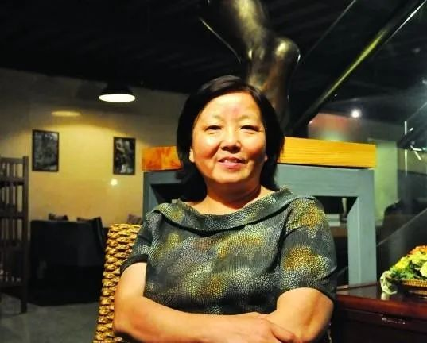
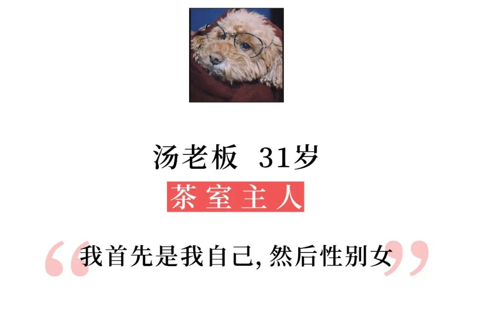
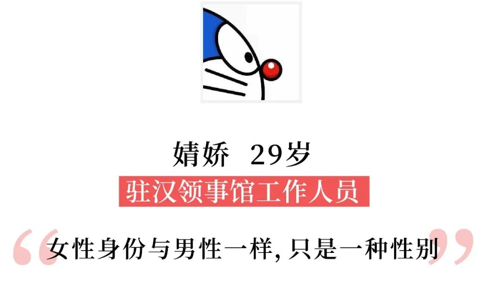
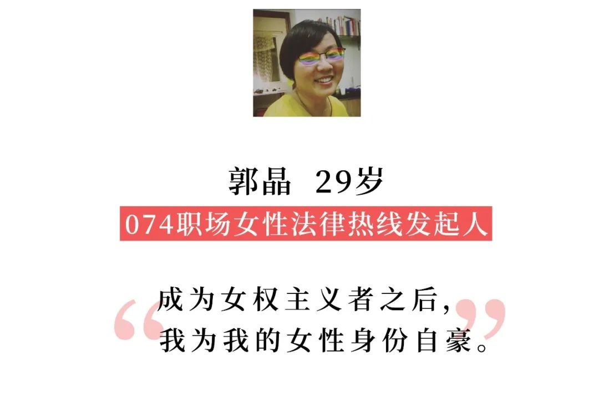

疫情日记 | 武汉封城的第四十六天
原文链接 备份链接 妇女节快乐！祝女性朋友们身体健康，生活幸福，工作如意，有真正平等自由的尊重和爱，相信自己，相信自己有他人所不具备的特质和潜力，成为一个不被轻易定义和束缚的人。 听淡豹老师做客初学者电台，印象深刻的一处是她和索马里谈论现 …


疫情未消散，我们迎来了一个特殊的“国际妇女节”——与热闹的买买买无缘，指着各个团购群补充日常物资；不再为聊胜于无的半天假期兴奋，而更想赶快从宅困家中的生活中解放。
被迫告别让钱包空瘪的购物狂欢，今年的3月8日，让我们有了契机，直面这个原本为争取女性平等而设立的节日。

武汉女人方方
从“疫情上报第一人”张继先医生，到坚持写新冠日记的作家方方，再到让汉骂出圈的汉口阿姨和向副总理高喊“假的”的青山嫂子，女性成为新冠疫情中一股不容忽视的力量。
一部分女性力量崛起背后，更多女性们仍然因性别差距饱受困扰。
世界经济论坛发布的《2020年全球性别差距报告》显示，2019年，从全球来看，两性平均差距缩小到68.6%，比去年有所改善，但全球仍有31.4%的性别差距有待缩小，在政治、经济领域的性别差距尤其巨大。

中国消除了67.6%的性别差距，在153个国家中排名第106位
虽然男女平权仍然任重道远，但不可否认的是，近些年，女性意识正在觉醒，从好莱坞一路蔓延全球的metoo运动就是重要的佐证之一。投射于影视剧作品上，女性角色的生存空间也受到越来越多关注。

《了不起的麦瑟尔夫人》将故事舞台设置在五六十年代的纽约，高学历、高颜值的全职太太蜜琪在老公出轨秘书后，重新开始人生，走上脱口秀舞台。

《82年生的金智英》改编自同名小说，讲述了一个名叫金智英的女性在童年、学生时代、职业生涯以及婚姻生活中经历了一系列困境与迷茫后，得了一种间歇性扮演她人角色的心理病。
回归性别差异本身，今天我们想要聊聊“女性意识”这件事情。我们问了不同年龄段、不同行业的女性们一个同样的问题：
对你来说，“女性”的身份意味着什么？
无论答案是什么，这个问题其实只想指向一件事情——即使成见还没有被打破，即使还没有找到方向，也希望你首先愿意去探索与尝试，为自己的人生做主。
性别并不是判定人价值的法则，突破差异，学会爱自己，为自己感到自豪，才是关键所在。
以下是她们的回答：

我个人不太喜欢被任何“身份”去标签化，女性的前提是独立的个人。一旦一个女性被赋予“女儿”、“老婆”、“母亲”这些标签，她很容易失去自我。但我并不是说，一个女性不能成为好的女儿、老婆或者母亲，只是这些身份不应该是她的全部。我首先是我自己，然后性别女。
作为一名温和的“女拳”主义者，我认为女性和男性都是一样的。我们不应该被刻板印象去限制每个人的发展。举个例子，女性一定不够强壮吗？拳击界的女选手吊打普通男性应该毫无压力吧。男性就一定不够温柔体贴吗？我觉得吴青峰就比一部分神经大条的女孩子要温柔多了呀。我希望所有的女性都能拥有自信，活出真实的自己。

于我而言女性身份与男性一样，只是一种性别。生而为人，无法改变。但男/女分别代表着不同的个性，不同的优势。
女性在语言方面相对更有优势，适应能力也比较强，感情偶尔细腻。但同时可能体力没那么好，太感性容易纠结（好像暴露了自己）。通过出国读书，深切感受：在国外，女性和男性差别并不大，不会因为是女性就有所要求或者束缚。她们一样可以过得自由肆意，随性洒脱，获得尊重。甚至有些时候女性更隐忍，更坚强。
我非常享受用自己的方式，以女性的视角，乐观向上地去生活，温柔坦荡去爱，赤诚勇敢地对待这个世界。

首先这个问题，是把女性的身份作为一个单独的概念提出，那么我想是相对于男性身份概念而存在的。这样说并不是把这两者相对立的含义，对我来说，女性身份更多的是一些代表女性美好的，独特气息的一面。
男女的差异上，比如说生育，你没法说这对于女性是绝对的优点或缺点。生育的疼痛和后遗症对女性身体的物理伤害是肯定的，但从精神上也有很多女性能感到非同寻常的满足和愉悦。我自己真的没思考过相对于男性的优缺点，但在职场上，女性依然是缺乏更多的平等机会，这是事实。

第一反应是意味着母亲。但其实女性一辈子的身份都在不停切换，作为女儿、女朋友、妻子，我觉得很多女性是从来没有为自己活过的。

在新的时代，我觉得女性的身份有了极大的变化，它意味着坚持自我、自信、坚强、独立（经济+人格）。
回归我自己本身，我觉得总体来说，相较于男性而言，社会对于女性没有那么宽容，女性承受着来自家庭和事业的双重压力。

女性的身份，意味着需要更多的付出，更多的承受，更多的被误解，更大的社会压力。
家庭角色分工中，女性的付出的远远要比男性多，可收益并不平等。在职场，优秀的女性大多会冠以女强人的称谓，意味着家庭不保，因为没有更多地去投入家庭。可男人似乎天生就不需要承担这些。男性天生的征服欲是需要通过女性的柔弱去建立，但现实社会对柔弱并不友好。成功需要用时间去积累，但女性在家庭中的角色定位，导致家庭和事业的兼顾困难。

对我来说，女性身份意味着能更加敏感细微地体察周边情绪，能更好地与世界共情，当然不是说男性就不可以，但是某些时刻，能花更多时间去体会细枝末节。
我从心底接受自己，不是作为女性吧，而且作为一个独立个体。大概是从以前开始就很较真，不服输去争第一。读书的时候考试前几名都是女生，学车的时候满分也是女生，后来工作了，我们企业一起晋升的也有很多女生。看到女生在各行各业，不服输地去打破所谓的天花板，去和世界较劲，那个时候觉得，能成为女性之一太好了。

在这样一个父权的社会、一个性别不平等的社会里，女性的身份意味着女性很多时候在生活中，在职场中会遭遇到一些性别歧视和性别暴力。
对于我来说，同样也是这样。从小父母对男孩儿的教育和对女孩儿的教育就是不一样的。男孩儿很多时候会被鼓励去表达自己，包括表达自己的愤怒；但是女孩儿很多时候就会被鼓励照顾别人的情绪。
因为结构性的性别不平等，男性处于一个相对特权的位置，女性处于一个相对弱势的位置，就家庭暴力而言的话，女性是主要的受害者，当然还有儿童。在职场中，女性也会遭遇各种类型的一些性别歧视，比如从招聘的过程中可能就会因为是女性就不招，然后录取之后也会出现同工不同酬、职场天花板、退休年龄歧视、怀孕歧视等诸多问题。
我在成为一个女权主义者之后，我就为我的女性身份很自豪。那个自豪是源于尽管在这个社会中遭遇了很多性别不平等，而且看到很多性别不平等，但是我能够去觉察到这些是为什么以及通过自己的一些行动去带来一些改变。
写在最后：
这篇文章的目的并非为了定义女性，也不为捍卫什么，而是希望去倾听女性们关于自身的真实想法，更好地理解她们。
我们也希望“她”们，抛开“妻子”、“母亲”、“女儿”等等身份外，还能拥有不被任何事情、任何人约束的精彩。
归根到底，每一种性别其实只是一种叠加属性，最重要的依然是我们作为人，作为万物之一，怎样去实现与创造自己的价值，活出自己的人生。
最后，祝所有女性节日快乐。也希望终有一天，我们可以不再需要这个节日。
text | 慕遥
photo | 受访者提供
💬
# 对你来说，男性/女性的身份意味着什么？#


原文链接 备份链接 妇女节快乐！祝女性朋友们身体健康，生活幸福，工作如意，有真正平等自由的尊重和爱，相信自己，相信自己有他人所不具备的特质和潜力，成为一个不被轻易定义和束缚的人。 听淡豹老师做客初学者电台，印象深刻的一处是她和索马里谈论现 …
原文链接 备份链接 图片来源：视觉中国 记者：谢欣 “ 研究发现早期患者比例更低而后续上升，可能是因女性激素水平更高而导致潜伏期更长，但有专家认为这一研究依据不足。 ” 预印本发布网站SSRN3月3日发布了一篇题为“Women May …
原文链接 备份链接 在全国人民上下一心抗疫冲锋的同时，上海始终没有忘记身在一线的“她们”。 记者 | 应 琛 在抗疫第一线，一套防护服需要穿多久？目前绝大多数的报道中，是8个小时，但实际上有时可能更久。因为怕浪费物资，医护人员往往会穿尿 …
原文链接 备份链接 人是一种社会生物，这就是为什么我们需要缔结社会契约，而新冠病毒可能就是那个触发点 图/视觉中国 文 | 沈联涛 香港乃至许多亚洲人都信奉的新自由主义秩序，建基于自由市场，以及一个重要的社会契约之上：每个公民都会得到国家 …
原文链接 备份链接 前线医护人员的卫生巾和安心裤还够吗？ 2月6日，24岁的女孩梁钰在微博上发问：“前线医护人员的卫生巾和考拉裤还够吗？这么多的女性医护人员是如何解决她们的月经问题啊？现在防护服不够，想必也是一片卫生巾用一天，也很容易感 …